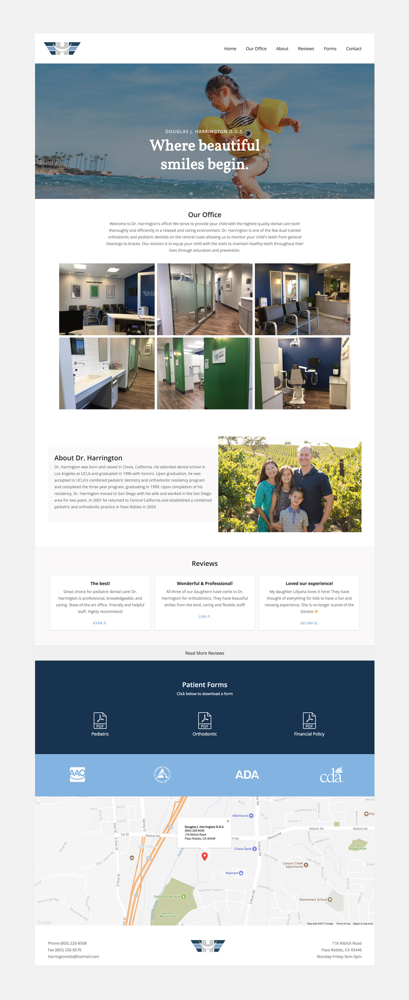

Dr. Harrington is a well established pediatric and orthodontic dentist in Paso Robles, California. They were looking to update their logo and gain a presence on the web. As the main designer on this project, I was responsible for designing all wireframes, using user experience research methods, visual design, and website developement.
It was important to create personas to determine what patient's parents were looking for when going onto the website. I created two different personas for new patients and returning patients.
The goal was to condense information so the user could easily find what they were looking for without having to search through multiple pages. I based the IA on the personas since they would be the main users of the website.
I created low-fidelity wireframes to lay out the structure of the site. These were great for communicating the design and user flow. Based on the personas I also determined the best user flow for the website. Originally, I planned on using a video tour of the office as the hero but after conducting a survey the office's patient’s parents, 75% used their phones to look at websites. Due to connectivity issues with the internet, I chose to use an image instead so there wasn’t an issue with loading or buffering.
I ended up changing the flow of the website to first show off the office, introduce the Dr. Harrington, then show reviews since most of the users on the site would be returning patients. The placement of the downloadable forms was in the middle of the site so it was an important aspect but wasn't the most important.
I created high-fidelity mockups to get approval from the client before coding the final site.
See the site → Douglas J. Harrington D.D.S.
